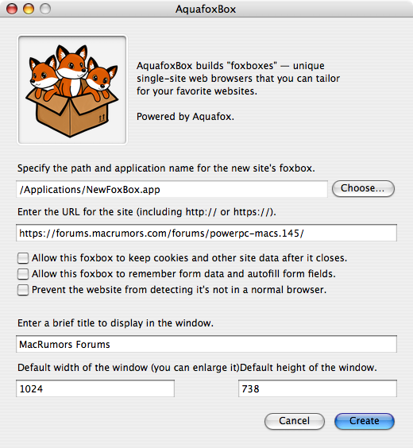

What does AquafoxBox do?
AquafoxBox allows you to create "foxboxes" — special site-specific instances of Aquafox that run separately from the main browser just for the single websites you specify. This allows you to keep your data private and, because it doesn't have the full overhead of the main browser and isn't running any other tabs, to view these sites with better performance. Just double-click them to start them like any other application. They can run simultaneously with other foxboxes and Aquafox.
How to Create a Foxbox
-
Make sure Aquafox 1.0 or higher is installed in your
/Applicationsfolder. Other TenFourFox-based browsers will not (yet) work. Aquafox requires a G3, G4, or G5 Macintosh running Mac OS X 10.4.9 or later. Please note that Intel Macs are not supported. -
Start AquafoxBox. The main window appears below.

- Click the "Choose..." button to select the location for the new foxbox and the name of the application. The name will also appear in the Command-Tab list, like any other app name.
-
Enter the website in the next field. Be sure to include either
http://orhttps://, as necessary. -
Choose additional features for the foxbox. Select any combination or none, as you desire:
- "Allow this foxbox to keep cookies and other site data after it closes": By default, the foxbox clears all site data and cookies, similar to private browsing mode in Aquafox. If you want to keep cookies and other site data between sessions, check this option. This allows the data to persist even after the foxbox closes. Although the saved data is isolated to the foxbox and not accessible to other sites, keep in mind that enabling this option may make your online actions easier to track.
- "Allow this foxbox to remember form data and autofill form fields": By default, the foxbox does not store form data and does not offer to autocomplete form fields. Check this option to allow the foxbox to store previous form entries and offer to fill them in. Form-fill data also persists from session to session but does not, in general, include passwords, and enabling the autocomplete feature may make the foxbox slightly slower. Some sites may have automatic fill-in based on cookies separate from this system.
- "Prevent the website from detecting it's not in a normal browser": Some sites, such as Amazon Music, try to sniff the browser and will refuse to run in the foxbox since it doesn't appear to be a regular browser. This overrides the user agent and may override other features in future versions. You should avoid using this option, as it may cause sites to enable features the browser might not actually support. Most sites don't require this option.
- Enter a brief title. This appears in the foxbox's window title bar and in Exposé.
- Enter the default width and height of the window. You can resize it later, and the dimensions and window position will be remembered from session to session.
- Click Create. After a brief pause, a dialogue box will appear indicating successful creation. Click OK.
Starting and Stopping Foxboxes
Foxboxes appear to the Mac as a "regular" application. Simply double-click the foxbox to start it. The foxbox will start a unique, special limited instance of Aquafox in its own window separate from the main browser, displaying the site you've specified.
You can have multiple foxboxes running simultaneously, even with Aquafox running as your main browser at the same time. However, due to limitations of OS X, to run Aquafox simultaneously, you must start Aquafox before you start any foxboxes, or you will not be able to start it until you have quit all open foxboxes.
Similarly, you cannot have multiple instances of the same foxbox running (like two sessions of Gmail) unless you create a separate foxbox for another instance.
To quit the foxbox, press Command-Q, choose Quit from the Box menu, or close all open windows in that foxbox. The last window position and size are remembered for the next session.
Life in a Foxbox: What You Can Do and What You Can't
Foxboxes run using the same version of Aquafox installed on your system. The menu bar will even say "Aquafox," but with different pull-down menus and, of course, a single window. Once the window appears, the site you have chosen automatically loads. A status bar at the bottom shows a progress bar as sites load and the destinations of any links. If the site is secure, a security indicator will appear at the bottom right with the computed security level.
The Box menu contains basic navigation options such as back, forward, reload, etc., and the Edit menu is self-explanatory. You can print from a foxbox, too. A simple context menu is available for editing operations like cut and paste.
You can browse to any site by clicking on links, but you cannot enter a URL directly. However, you can select "Home" from the Box menu to return to the foxbox's home page. If you want to grab a URL to view in the regular Aquafox, you can copy the current URL to the clipboard from the Box menu, or you can right-click a link to copy that link's URL to the clipboard instead.
Foxboxes will display HTML5 notifications, so sites like Gmail can alert you when you have new mail. Foxboxes will also let sites open additional windows if needed, but when all windows close, the application exits.
Foxboxes currently don't allow bookmarks, multiple tabs, geolocation, password saving, webcams, add-ons, or themes, nor any feature Aquafox doesn't support (such as plugins or WebGL), since foxboxes run in a private instance of Aquafox. Although downloads are supported, there is no download manager; they run asynchronously in the background. If you quit a foxbox with downloads in progress, any unfinished download is aborted.
What Makes a Site Good (or Bad) for Foxboxing?
Bad sites for foxboxing are those that:
- You don't trust. Foxboxes have a little more privilege and a little less checking than your browser. If you believe the site may be insecure or performing operations with your data that you don't understand, you're better off running it in regular Aquafox, where there are more safety features.
- Change their functionality frequently. Cosmetic upgrades are one thing, but if the site's core operations get altered a lot, the options you set for the site now may not work well in the future. You can always regenerate the foxbox (see below), but that's inconvenient to do all the time, and a site that constantly changes how it functions may be doing so to hide other sketchy things it might be up to (see previous bullet point).
Good sites for foxboxing are those that:
- Are highly interactive. You can devote an entire browser instance to them with a foxbox, and because the foxbox is a separate application, it can run more smoothly and be more responsive (it doesn't have to share the browser with other sites and can be scheduled on a separate core in a multiprocessor Mac).
- Use a lot of memory or system resources, such as media players or social sites. When you close the foxbox, its memory is instantly reclaimed, and there is much less delay for garbage collection. Also, on G5 systems with more than 2GB of RAM, separate foxboxes allow you to better utilize the additional memory in your computer: while Aquafox itself is only a 32-bit application, now you're running multiple instances of it, each of which has its own address space.
- Have high security or privacy requirements. You may be dealing with sites that you want to be completely separated from your main browser so that there is no chance information can leak from one to the other. Even though Aquafox runs them both, the foxbox is in "its own private hell," so to speak, and unless you say otherwise, private data in a foxbox is always cleared when you quit.
Adding a Custom Icon
Foxboxes have the default AquafoxBox icon. You can change the icon as you would for any other application. Note that your custom icon may be lost if you rebuild or regenerate the foxbox.
Copying Foxboxes
Foxboxes can be copied like any other application. They will automatically figure out the correct version of Aquafox to run if you copy it to another Mac, assuming it is installed. Copying a foxbox does not copy any stored data it may have accumulated.
Upgrading a Foxbox
Foxboxes run using the same version of Aquafox you have installed on your system (the same executable, in fact). Thus, when you upgrade Aquafox, you upgrade the browser core in all of the foxboxes on your system simultaneously. Quit all foxboxes before upgrading Aquafox.
Occasionally, the foxbox support code itself needs to be upgraded. When AquafoxBox builds a foxbox, it creates its own copy of the foxbox support code, which stands alone. Periodically, the support code needs upgrading for bug fixes, new features, and compatibility. To do so, simply create a "new" foxbox with the new version of AquafoxBox over the old foxbox with the same settings; it will be removed and regenerated. Any saved data such as forms, cookies, and so on is stored separately and will not be affected. Never rebuild a foxbox while it's running; quit it first.
Any time you upgrade AquafoxBox, you should regenerate any foxboxes you're using as soon as possible to get the latest improvements. Check the AquafoxBox GitHub project page periodically to ensure you're on the newest release.
Resetting and Removing Foxboxes
If your foxbox starts acting strangely, it can be reset by going to the ~/Library folder in your home directory and then deleting the foxbox's folder (named the same as the foxbox app) from Application Support and Caches. This resets it to the default window position and size and removes any other stored information. Note that rebuilding the foxbox doesn't reset it. Never reset a foxbox while it's running; quit it first.
To completely remove a foxbox from your system, quit the foxbox, reset it as instructed above, and then delete the foxbox itself.
Special Configurations
AquafoxBox will always look for Aquafox.app, regardless of architecture. However, if this application is the wrong version of Aquafox or compiled for a different architecture, it may not perform correctly or might fail to start altogether. To prevent this, if you have a version of Aquafox that you want to use instead of the default build, rename it to AquafoxBoxRunner.app, and it will always take precedence over any other copy of Aquafox. This is global and applies to all foxboxes on that system.
License Compliance
AquafoxBox is a fork of TenFourFoxBox, written in Perl, with embedded foxbox code (in JavaScript and XUL). The source code is available in the GitHub repository.